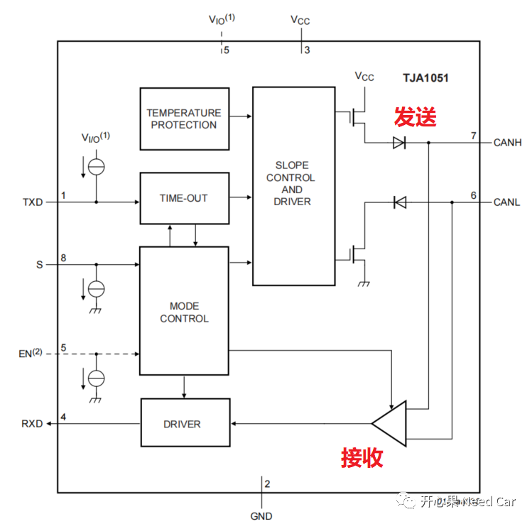
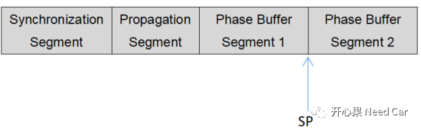
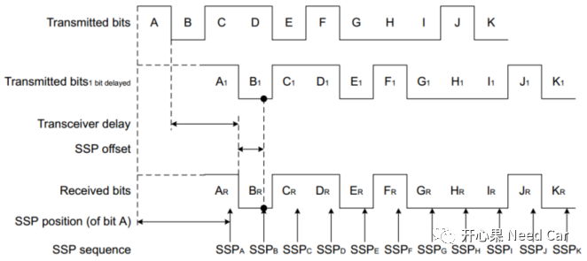
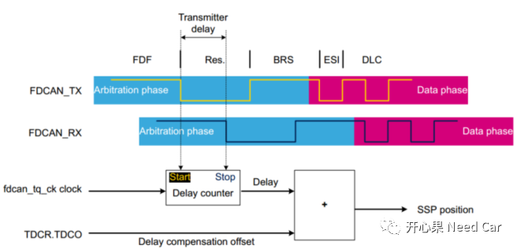

返回目录CAN FD第二采样点SSP
开心果 Need Car · 2021-11-27T07:40:00+08:00 · 微信原文
相对于经典CAN，CANFD因为其高带宽，可有效的提高负载，因此在各大主机场的整车拓扑中，CANFD占据的比重不断增加。CANFD对比经典CAN，提升速度的方式就是在数据段提高通信速率（一般由500Kbps提高到2Mbps），速率的提升将带来更大的延时，对采样点的要求也将有所不同，为了弥补收发器环路延时，增加了辅助采样点SSP（Second Sample Point）。收发器采样
我们知道，CAN收发器在发送数据的同时进行数据的回采，以此来确保发送数据的有效性，否则上报位错误。以TJA1051为例，收发器的数据收/发过程如下所示：

看上图，我们有一个这样的问题：收发器发送和接收需要走物理介质，既然走物理介质是不是就存在收/发之间的延时呢？答案：是的。我们需要清楚知道CAN收发器包括发射器和接收器两个独立的硬件部分。如果接收器要知道发送器当前发送的Bit是显性（0Bit）还是隐形(1Bit)必须考虑介质延时带来的影响，因此定义了SP（Sample Point），也就是说在SP采样可以让接收器准确判断发送器当前所发送的bit是啥。SP的定义如下所示：

考虑收/发器的不对称和总线振铃等因素，设计合理的SP有助于提升数据传输的鲁棒性。 接收器在SP采样可以理解为接收器在1Bit时间内等待了SS+PS+PBS1，1Bit = N(Tq），Tq是划分Bit的最小度量单位。举例：SP= 80%，SS = 1，PS = 2， PBS1 = 13, PBS2 = 4)。等待了SS+PS+PBS1（16Tq）才去采样说白了也是为了抵消介质传输带来的延时影响。
知道SP是怎么回事，我们思考这样一个问题：如果发送速率不断的提高，接收器在回采的时候，发送器都已经发送第二个Bit数据了怎么办？这是本文讨论的核心，CANFD的数据段速率提高到2Mbps以后，采样点如果还是传统的采样方式将使得采样不准。 如下所示，因为CANFD的数据段速率提升，发送器可能已经发送第2个Bit，接收器才接收到第一个Bit，即环路有1bit的延时，使用SP方式采样就会造成采样不准的问题。

CAN FD的SSP
注意，SSP是对CANFD数据段采样提出的概念。是为了补偿环路延时（发送器和接收器延时）定义的一个辅助采样点。环路延时的时差是测量得到的，具体测量方式如下所示：

在仲裁阶段，禁止使用延时补偿，仲裁阶段的通信速率500kbps,采样精度所受影响较小。SSP位置是CANFD的TX到RX的延时之和+CANFD TDCR.TDCO偏移补偿。
这里多提一些：在需求里如果看到要求设置3个采样点，说明当前节点可以处理经典CAN和CANFD两种报文类型。举例：对于经典CAN要求所有段采样点SP=85%，对于CANFD要求仲裁段SP=80%，数据段SSP=75%。这就是三个采样点的需求。